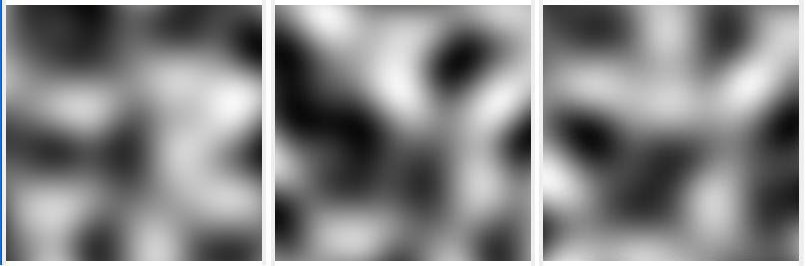
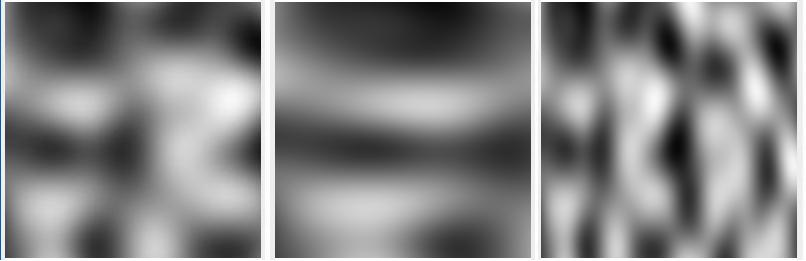
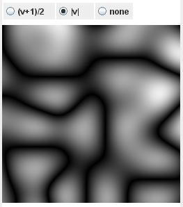

The following code will create a BufferedImage that
matches the above graphic. A template has been provided (see the
"Code Template" button) where you can copy and paste this code and
run it as a stand-alone Java program.
BufferedImage image = new BufferedImage(width, height,
BufferedImage.TYPE_INT_ARGB);
WritableRaster raster = image.getRaster();
int[] pixel = new int[4];
pixel[3] = 255; // alpha channel
double noiseValue;
for (int y = 0; y < height; y++)
{
for (int x = 0; x < width; x++)
{
noiseValue = SimplexNoise.noise(x/128f, y/128f);
noiseValue = (noiseValue + 1) / 2;
noiseValue *= 256;
pixel[0] = (int)noiseValue; // red
pixel[1] = pixel[0]; // green
pixel[2] = pixel[0]; // blue
raster.setPixel(x, y, pixel);
}
}
The basic idea is to iterate through the individual pixels
of the graphic, and use the (x, y) locations as arguments (usually
with a scaling factor, as seen here where the scaling is 1/128) to
the noise function to generate our texture values. The code for
creating a BufferedImage, a WritableRaster
and navigating through the image setting individual pixel values is
assumed to be familiar. If not, you can learn more about this at the
Java 2D tutorial:
http://docs.oracle.com/javase/tutorial/2d/overview/images.html
The call to the noise function, for 2D, is static:
double noiseValue = SimplexNoise.noise(x, y);
We use an argument for each dimension we wish to traverse. For a
1D call, we would provide a single argument, for 3D we provide 3
arguments, and so on. Our particular reference implementation only
accepts from 2 to 4 arguments, for 2D to 4D noise. Inputs and
outputs are all of the type double.
A key point is that the output of a given input is always
the same. SimplexNoise.noise(0, 0) will always
return the same number. Each call to (100, 0) will also always
return it's same number, and so on.
Another important point is that no matter where one starts, as one traverses the noise space, one receives values with the same degree of variability, as long as the increment is the same. The details will vary, but the same "texture" should result.
The following figure shows three starting values for X: 0, 100 and -256. In each case, we increment 256 times (once for every pixel in the width of the target graphic). You can see that there is a definite "family resemblance" in the resulting graphics.
Fig. 1 Three translations, X starting at (a) 0, (b) 100, (c) -256. There is a similarity to the textures, even as the details differ.
Given this, those wanting to "seed" the noise function can do so
by generating a random constant and adding this to the X and/or Y value,
aka translating (e.g., using (x + seedValue, y) in
place of (x, y)).
Closely following this is a third key point: to change the degree of variability, one increases or decreases the increment between adjacent calls. In our sample code for the top-of-the-screen graphic, the increment is 1/128. As X iterates from 0 to 699 (spanning the width of the graphic), our calls to the noise function iterate by 1/128th of this amount: 0/128, 1/128, 2/128, ... 699/128.
Making the interval smaller will spread out the hills and valleys. Making it larger will make the variability more dense.
Fig. 2 Three scalings, (a) X interval is 1/128, (b) X interval is 1/256 (twice as small), (c) X interval is 1/64 (twice as large). The Y interval remains 1/128 in all three.
In Simplex 2D space, the degree of randomness has predictability in that the defining gradient nodes (which are points that always return a value of 0) are located in a grid of equilateral triangles. There is undoubtedly a mathematical formula to derive the frequency of the peaks and valleys as a function of distance, but I'm afraid I don't have it as of this writing. To move smoothly across this space, we have to use increments that are a great deal smaller than 1.
The tutorials I have seen online so far all tie this Scaling factor value to the width or height of the graphic being created. For example, one might use a scaling factor = 1/width. Note that by this method, a degree of randomness is stretched to fit the graphic, based on the size of the graphic. For example, we might see the following:
noiseValue = SimplexNoise(X * (1/width), Y * (1/height);
or simplified:
noiseValue = SimplexNoise(X/width), Y/height);
If you use this method, be careful not to do "integer division".
You might need to add a cast since both x
or y iterators and size values are
commonly held in ints.
I currently prefer to use a fixed scaling factor of 1/256, or multiples of it. This way, scaling values will create the same results for a given distance on the screen. Granted, the output will still vary in visual size depending upon the screen resolution. The Texture Editing Tool uses 1/256 as the default scaling factor, and any additional scaling is multiplied to this default. But, for the graphic at the top of the page, I decided the default looked a little bland, so I multiplied the default scaling by 2 in order to make the noise vary twice as often, for purely esthetic reasons.
[It occurs to me, though, that scaling the noise to the size of the graphic makes perfect sense if one is working in 3D. That way the texture pattern can more easily be computed to grow or shrink along with the changes in the size and orientation of the object it is covering.]
Output
The value returned by all forms of the Simplex noise function is a double, ranging from -1.0 to 1.0. Ken Perlin wrote that he chose this range for two reasons: (1) it matches the outputs of Sin and Cosine functions, and (2) the function is "DC neutral," i.e., the cumulative average value tends to zero regardless of the amplitude of the noise.
However, this output range of -1 to 1 does not match values we normally use for encoding colors in Java. Some use normalized floats (0.0f to 1.0f), but I think the use of integer values ranging from 0 to 255 is often preferred.
Smooth Noise
There are several ways in which the noise values are transformed to fit into the color range. The most common is to use the following function, which compresses and translates the range to [0, 1] (in other words, normalizes the output). When this transform is used, the resulting noise retains the smooth, rolling contours that can be seen in our demo graphic at the top of the page. Noise use in this fashion is sometimes called "Smooth Noise".
noiseValue = (noiseValue + 1) / 2;
Once normalized, noiseValue can be multiplied by
256 and truncated to the nearest integer. [As far as I know, in
this implementation the noise value never reaches exactly -1.0 or
1.0. I was unable to find documentation to verify this. But when
running tests, I was unable to generate absolute values greater
than 0.998.]
After this scaling, the values can be selectively applied to
the RGB channels. In our example, we apply the noise values to all
three color channels, so the result will range from
Color.BLACK (RGB values are (0,0,0)) to
Color.WHITE (RGB values are (255, 255, 255)). But one
is free to scale and vary the mapping to link any two colors, or
substitute other mapping functions besides the linear interpolation
we've done in the example. In a later section I will demonstrate
the use of a "Color Map".
Turbulent Noise
Another method of normalizing the noise data is to apply an ABS function. The noise that results from this transform is often called "Turbulent Noise", a name given by Perlin himself.
noiseValue = Math.abs(noiseValue);
The effects can be seen by selecting the "|v|" radio button in the texture tool. This button signals the tool to use the above "absolute value" normalization equation.
Fig. 3, Turbulent Noise returns a texture with a discontinuity where the Simplex function returns 0.
If you compare this image with the graphic at the top of the page (matching the top left corners), you might be able to see where the middle values in the smooth form have become the lowest (darkest) points in the turbulent function, and how the image folds on either side. The following table of values shows smooth and turbulent data, side by side.
Fig 4. Noise values, with two normalization methods
noise "Smooth" "Turbulent"
value (v + 1)/2 |v|
-------- ----------- ----------
-1 0 1
-0.5 0.25 0.5
0 0.5 0
0.5 0.75 0.5
1 1 1
The noise value normalized by the turbulent transform can then be converted to a color value in the same manner as with the smooth translation & compression method.
Using the Texture Editing tool
The texture editing tool allows one to edit four "channels". This graphic only uses one channel, represented by the stack of controls on the top left.
The XScale and YScale controls vary a scaling factor, currently set to 2.0. XTrans and YTrans allow one to "translate" the noise function to different locations. The values in these four controls are used in the noise function calculation as follows:
noiseValue = SimplexNoise.noise(
(X * XScale)/256 + XTrans, (Y * YScale)/256 + YTrans );
As you play around with these values, you can see how the scaling affects the density of the variability, but that translating does not.
The Min and Max controls were written to be applied directly to the generated noise value (prior to normalization), and thus also have a range from -1.0 to 1.0. I wasn't sure whether they would turn out to be useful or not, and left them in as playing with them might help one get a sense of how the math in the space works.
The row of buttons just above the channel image are used to control the type of transform used to normalize (or not) the noise values. Once normalized, the values are scaled to color values. In our example graphic, the selection is "(v+1)/2", the setting for "Smooth Noise". [We'll look at the "none" option in the next segment.]
Below the local image are two sets of buttons and sliders that are used to "mix" the separate noise channels. Since there is only one channel in use (channel 0), it's slider has been set to maximum and the other channels are set to 0. I will explain more about these controls in coming segments.